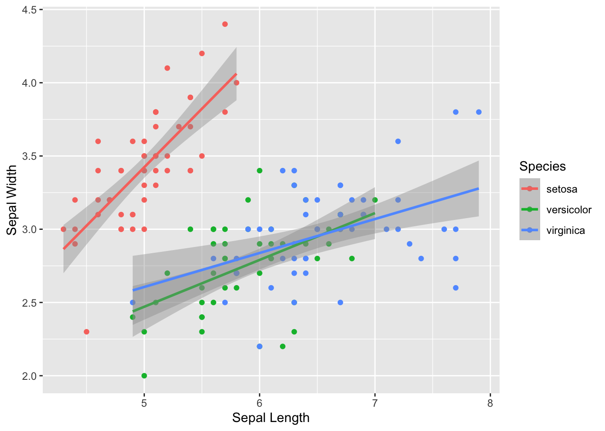

Intro to ggplot2
Dai Shizuka
updated 09/11/25

1. What is ggplot2?
“ggplot” (technically “ggplot2”) is an R package* that facilitates elegant design of graphics. Even if you are brand new to R, you might have heard about “ggplot”–in fact, for some people it might be the main reason they want to learn R.
ggplot2 is much more ambitious and in some ways much more challenging
than most other packages because it creates a new “grammar” of graphics,
and it requires you to learn some new syntax. But with practice, this
syntax will start to make sense, and it can help you make excellent
quality figures. In addition, there are now many extentions packages
that allow you to do even more with the ggplot grammar (e.g., make maps
with ggmap or display networks with ggraph,
etc.–see a gallery of extensions here)
ggplot2 is part of the “tidyverse” suite of packages. There is a separate module on other major aspects of tidyverse, such as tidyr and dplyr.
Super Useful References:
ggplot2 website: https://r-graph-gallery.com/ggplot2-package.html
The ggplot2 book (free online version): https://ggplot2-book.org/index.html
The online ‘tidyverse’ book: https://r4ds.had.co.nz/data-visualisation.html
*** What is a “package” in R? ***
R packages are essentially a set of custom functions that R users have created and compiled, along with help files and vignettes, etc. Many of them are archived at CRAN–The Comprehensive R Archive Network–and available to install from the R console using the function
install.packages(). There are still many other packages that users have not archived but are available from other sources, such as github. “Installing” the package means that the package is downloaded onto your computer. When you are ready to use them, you will have to load the package onto the environment by running the functionlibrary()orrequire().
2. Installing and loading the package
One can install each package separately, but you can also just install all “tidyverse” packages simply by running this command:
install.packages("ggplot2")Note that this simply downloads the packages onto your computer. You only have to do this once on a given computer.
You now have the package downloaded on your computer, but to actually
use it, you have to load the package. We can load the entire
tidyverse package (or, if you prefer, you can just load the
tidyr package).
library(ggplot2)3. The basics of the ggplot2 syntax
3.1. Components of a graphic
ggplot2 uses what is called layered grammar of graphics
We can break down the layers of any graphic to different components (see this pdf for full explanation):
The data
Mapping: how the variables in the data are converted to “aesthetics” of the figure
The geom, or geometric object: the type of visual object you want to make
Statistical transformations: e.g., fit lines
Scaling: i.e., how different values of variables are represented
Non-data elements: e.g., grid lines, axis labels, title, etc.
Faceting: i.e., representing subsets of data as subplots
3.2. The basic workflow of ggplot2
First specify the data using the
ggplot()function.Add “aesthetic mapping” (i.e., specify the visual parameters of the graphic) using
aes(). This can be set within theggplot()function if you want the aesthetic to apply as default to all layers you are going to define, or within thegeom_function if you want different layers to have different aesthetics.Define specific plot components using additional
geom_functions (such asgeom_points()). Note that you literally add these components using+Layer on any other components with additional
geom_orstat_functions- These layers can include summary stats (e.g., means, medians, counts, etc… or any other stats that you can calculate via custom functions).
Define scaling of variables if needed (e.g., color palette)
Make adjustments via scales, axes, legends, etc.
4. Building a simple scatterplot, step-by-step
Scatterplots are used to display the relationships between two continuous variables.
In the “basics of plots” module, we created a scatterplot of sepal
lengths and widths from the iris dataset that looked like
this:
colorset=rainbow(3) #create a palette of 3 colors
pt.cols=colorset[as.numeric(iris$Species)] #This is now a vector of colors for each point
plot(Sepal.Width~Sepal.Length, data=iris, xlab="Sepal Length", ylab="Sepal Width", las=1, pch=19, col=pt.cols)Here, we will go through step-by-step on how to recreate this figure, but in ggplot2
step 1: Define the data and aesthetics.
This will only create a blank plot
ggplot(data=iris, mapping=aes(x=Sepal.Length, y=Sepal.Width))
step 2: add scatter plot using geom_point()
ggplot(iris, aes(x=Sepal.Length, y=Sepal.Width)) +
geom_point()
step 3: Change point size by defining additional parameters within
the geom_ function.
ggplot(iris, aes(x=Sepal.Length, y=Sepal.Width)) +
geom_point(size=2)step 4: Color the points by species by defining it in the aesthetics
(aes() argument)
ggplot(iris, aes(x=Sepal.Length, y=Sepal.Width, color=Species)) +
geom_point(size=2)step 5: Define the color scaling
In the base R example plot above, we used a rainbow(3)
palette to generate 3 color values. We can do that here using a
scale_color_discrete() function. Note: there are lots of
different scale_color_ functions, and it might take you a
while to get familiar with them.
ggplot(iris, aes(x=Sepal.Length, y=Sepal.Width, color=Species)) +
geom_point(size=2) +
scale_color_discrete(type=rainbow(3))You can also assign your own color palette using
scale_color_manual().
ggplot(iris, aes(x=Sepal.Length, y=Sepal.Width, color=Species)) +
geom_point(size=2) +
scale_color_manual(values=c("tomato", "slateblue", "gold"))You can learn all about the color scales in ggplot2 here: https://ggplot2-book.org/scales-colour.html
step 6: Edit the x- and y-axis labels.
Right now, the labels say “Sepal.Length” and “Sepal.Width”. Let’s change the periods into spaces:
ggplot(iris, aes(x=Sepal.Length, y=Sepal.Width, color=Species)) +
geom_point(size=2) +
scale_color_discrete(type=rainbow(3)) +
xlab("Sepal Length") +
ylab("Sepal Width")step 7: Changing the plot “theme”
The gray back ground with the white grid lines is a signature
background for ggplot. But for publications, you might want the more
traditional background. You can play around with the background using
“themes”. There are some built-in alternative themes in ggplot that you
can call, such as theme_bw().
ggplot(iris, aes(x=Sepal.Length, y=Sepal.Width, color=Species)) +
geom_point(size=2) +
scale_color_discrete(type=rainbow(3)) +
xlab("Sepal Length") +
ylab("Sepal Width") +
theme_bw() step 8: additional adjustments in theme:
You can also customize themes further using the theme()
function.
However, to do this, you need to learn another class of ggplot functions called “elements”. Elements are non-data elements of the plot that you can change.
element_text()is used to change textelement_line()is used to lineselement_blank()is used to remove an element.
For example, I can use it to remove the grid lines.
ggplot(iris, aes(x=Sepal.Length, y=Sepal.Width, color=Species)) +
geom_point(size=2) +
scale_color_discrete(type=rainbow(3)) +
theme_bw() +
theme(panel.grid.major = element_blank(), panel.grid.minor = element_blank())I can use element_text() to change the size of the text
at the tick marks.
ggplot(iris, aes(x=Sepal.Length, y=Sepal.Width, color=Species)) +
geom_point(size=2) +
scale_color_discrete(type=rainbow(3)) +
xlab("Sepal Length") +
ylab("Sepal Width") +
theme_bw() +
theme(panel.grid.major = element_blank(), panel.grid.minor = element_blank(), axis.text=element_text(size=16, color="purple"))For a complete guide on ggplot themes, go here: https://ggplot2-book.org/themes.html
step 9: Work with the legend
… ok, most of the time, you probably should have a legend. But, it
will be helpful for you to learn how to play around with it. There are
several ways to do this, but one way is to edit the
legend.position argument in the theme()
function.
ggplot(iris, aes(x=Sepal.Length, y=Sepal.Width, color=Species)) +
geom_point(size=2) +
scale_color_discrete(type=rainbow(3)) +
theme_bw() +
theme(panel.grid.major = element_blank(), panel.grid.minor = element_blank(), legend.position = "none") +
xlab("Sepal Length") +
ylab("Sepal Width")Alternative syntax:
Just to note: You can also move the aesthetic mapping to the
geom_point() function rather than the ggplot()
function. It doesn’t make any difference in this example because you
have only one geom function. But it might make a difference
when you are doing more complex visualizations.
ggplot(iris) +
geom_point(aes(x=Sepal.Length, y=Sepal.Width, color=Species), size=2) +
scale_color_discrete(type=rainbow(3)) +
theme_bw() +
theme(panel.grid.major = element_blank(), panel.grid.minor = element_blank(), legend.position = "none") +
xlab("Sepal Length") +
ylab("Sepal Width")
5. Adding a regression line
Let’s go back to the basics and add a linear regression line through
the iris sepal data. To start with, we will just add one line for all
points. We can do this with geom_smooth()
Let’s first try it without specifying any methods
ggplot(iris, aes(x=Sepal.Length, y=Sepal.Width)) +
geom_point() +
geom_smooth() +
xlab("Sepal Length") +
ylab("Sepal Width")## `geom_smooth()` using method = 'loess' and formula = 'y ~ x'You can see that it adds a “smooth” line (using a “loess” regression–which stands for locally estimated scatterplot smoothing).
But what we usually want to do is fit a linear regression line:
ggplot(iris, aes(x=Sepal.Length, y=Sepal.Width)) +
geom_point() +
geom_smooth(method="lm") +
xlab("Sepal Length") +
ylab("Sepal Width")## `geom_smooth()` using formula = 'y ~ x'You can see that, when we add a regression line to the whole data, we don’t get any relationship. This is because we are mixing up the data from all three species.
We can separate the species but just using it as a grouping variable:
ggplot(iris, aes(x=Sepal.Length, y=Sepal.Width, group=Species)) +
geom_point() +
geom_smooth(method="lm") +
xlab("Sepal Length") +
ylab("Sepal Width")## `geom_smooth()` using formula = 'y ~ x'… but it’s probably more useful to have them be in different colors:
ggplot(iris, aes(x=Sepal.Length, y=Sepal.Width, color=Species)) +
geom_point() +
geom_smooth(method="lm") +
xlab("Sepal Length") +
ylab("Sepal Width")## `geom_smooth()` using formula = 'y ~ x'
Make it prettier with custom colors and formatting adjustments.
ggplot(iris, aes(x=Sepal.Length, y=Sepal.Width, color=Species)) +
geom_point(size=2) +
geom_smooth(method="lm") +
scale_color_manual(values=c("tomato", "slateblue", "gold")) +
xlab("Sepal Length") +
ylab("Sepal Width") +
theme_bw() +
theme(panel.grid.major = element_blank(), panel.grid.minor = element_blank())## `geom_smooth()` using formula = 'y ~ x'6. Faceting
You can also easily create multi-panel plots using
facet_wrap() or facet_grid() (you can look up
the difference with a web search).
For example, let’s plot the relationships between sepal length and width for each of the three species separately.
ggplot(iris, aes(x=Sepal.Length, y=Sepal.Width)) +
geom_point(size=2) +
geom_smooth(method="lm") +
xlab("Sepal Length") +
ylab("Sepal Width") +
theme_bw() +
theme(panel.grid.major = element_blank(), panel.grid.minor = element_blank()) +
facet_wrap(~Species)## `geom_smooth()` using formula = 'y ~ x'7. Saving ggplot outputs
7.1. The ggsave() function
You can export the last plot you made using the function
ggsave(). Enter the file name you want to save it as,
including the file extension.
ggsave("scatterplot.png")You will find the file in your Rproject folder.
7.2. Adjusting the file dimensions
You might find that you want to adjust the width and height of the plot. You can set this in inches or whatever other unit (see ?ggsave() for details).
ggsave("scatterplot.png", width=8, height=4, units="in")7.3. Best practice: save the plot as an object, and then save it.
A better way is to save the plot as an object, and
then save it. Here, we will assign the plot with the legend as
p and then save it.
p=ggplot(iris, aes(x=Sepal.Length, y=Sepal.Width, color=Species)) +
geom_point(size=2) +
scale_color_discrete(type=rainbow(3)) +
theme_bw() +
theme(panel.grid.major = element_blank(), panel.grid.minor = element_blank()) +
xlab("Sepal Length") +
ylab("Sepal Width")
#display the plot
p#save the plot
ggsave("scatterplot_w_legend.pdf", width=8, height=4, units="in")8. Some other aesthetic options
Here is a vignette for other aesthetic specifications: https://ggplot2.tidyverse.org/articles/ggplot2-specs.html
Here is the “themes” section in the ggplot2 book: https://ggplot2-book.org/polishing.html
9. A gallery of some other plot types:
Boxplot & Violin Plot:
Boxplots and violin plots are used to display the relationship between a categorical variable and a continuous variable.
Boxplots (aka “box-and-whiskers plot”) typically displays the median, 25th & 75th percentile, the 25th & 75th percentile +/- 1.5 IQR (inter-quartile range) and outliers. Violin plots show the distribution of data for each category as a density plot.

The typical boxplot
ggplot(iris, aes(x= Species, y=Sepal.Width, fill=Species)) +
geom_boxplot() +
scale_fill_brewer(palette="RdYlBu") +
ylab("Sepal Width")ggplot(iris, aes(y= Species, x=Sepal.Width, fill=Species)) +
geom_boxplot(notch=T) +
scale_fill_brewer(palette="RdYlBu") +
ylab("Sepal Width")ggplot(iris, aes(x= Species, y=Sepal.Width, fill=Species)) +
geom_violin() +
scale_fill_brewer(palette="Blues") +
ylab("Sepal Width")Histogram & Density Plot:
Histograms and density plots are used to visualize the distribution of a continuous value.
ggplot(iris) +
geom_histogram(aes(x=Sepal.Width)) +
theme_classic()## `stat_bin()` using `bins = 30`. Pick better value with `binwidth`.ggplot(iris, aes(x=Sepal.Width, fill=Species)) +
geom_histogram(alpha=0.7, position='identity', color="black") +
scale_fill_manual(values=c("red", "yellow", "blue")) +
facet_grid(rows=vars(Species)) +
theme_classic()## `stat_bin()` using `bins = 30`. Pick better value with `binwidth`.ggplot(iris, aes(x=Sepal.Width)) +
geom_density() +
theme_classic()ggplot(iris, aes(x=Sepal.Width, fill=Species)) +
geom_density(alpha=0.5) +
theme_classic()Line chart
A line chart just connects points together. It is commonly used to display the change in a numberical value in a timeseries. It can also be used todisplay tracks across two dimensional space.
Here’s a very simple example. The economics dataset
included in ggplot2 presents a few monthly metrics of the US populations
from 1967 to 2015.
#take a look at the data
economics## # A tibble: 574 × 6
## date pce pop psavert uempmed unemploy
## <date> <dbl> <dbl> <dbl> <dbl> <dbl>
## 1 1967-07-01 507. 198712 12.6 4.5 2944
## 2 1967-08-01 510. 198911 12.6 4.7 2945
## 3 1967-09-01 516. 199113 11.9 4.6 2958
## 4 1967-10-01 512. 199311 12.9 4.9 3143
## 5 1967-11-01 517. 199498 12.8 4.7 3066
## 6 1967-12-01 525. 199657 11.8 4.8 3018
## 7 1968-01-01 531. 199808 11.7 5.1 2878
## 8 1968-02-01 534. 199920 12.3 4.5 3001
## 9 1968-03-01 544. 200056 11.7 4.1 2877
## 10 1968-04-01 544 200208 12.3 4.6 2709
## # ℹ 564 more rows#see the details of the data from the help file
?economicsThis data is already nicely organized, so we can simply plot a metric, say the population size, across time:
ggplot(economics, aes(x=date, y=pop)) +
geom_line()Let’s do another example. For this, let’s use a different data set
included in base R, called Orange. This dataset shows the
change in circumference of 5 orange trees across different ages.
Orange## Grouped Data: circumference ~ age | Tree
## Tree age circumference
## 1 1 118 30
## 2 1 484 58
## 3 1 664 87
## 4 1 1004 115
## 5 1 1231 120
## 6 1 1372 142
## 7 1 1582 145
## 8 2 118 33
## 9 2 484 69
## 10 2 664 111
## 11 2 1004 156
## 12 2 1231 172
## 13 2 1372 203
## 14 2 1582 203
## 15 3 118 30
## 16 3 484 51
## 17 3 664 75
## 18 3 1004 108
## 19 3 1231 115
## 20 3 1372 139
## 21 3 1582 140
## 22 4 118 32
## 23 4 484 62
## 24 4 664 112
## 25 4 1004 167
## 26 4 1231 179
## 27 4 1372 209
## 28 4 1582 214
## 29 5 118 30
## 30 5 484 49
## 31 5 664 81
## 32 5 1004 125
## 33 5 1231 142
## 34 5 1372 174
## 35 5 1582 177Here, “age” is a time variable. We can plot the change in the circumference of trees across age. However, there are data from multiple trees here, so we need to tell the function to plot each tree as a separate line. We can do this two ways.
First, we can use the argument group= within the
aesthetics to indicate the Tree is the grouping
variable.
ggplot(Orange, aes(x=age, y=circumference, group=Tree)) +
geom_line()Or, we can use the argument color= to indicate that we
want the data for each tree shown in different colors. This will also
automatically generate a legend
ggplot(Orange, aes(x=age, y=circumference, color=Tree)) +
geom_line()